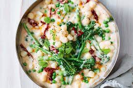

Most popular receipes of the week!
click to add ingredients to shopping list


Cooking Tutorials
Learn how to cook with step-by-step guides from the Taste of Culture Kitchen. Our experts will walk you through the techniques you need to master must-try dishes and desserts.
This recipe for beef and broccoli stir fry is a classic dish of beef sauteed with fresh broccoli florets and coated in a savory sauce. You can have a healthy and easy dinner on the table in less than 30 minutes! I love stir fries for a quick meal thats
full of flavor. Some of my favorites include honey garlic chicken stir fry, teriyaki shrimp, and this delicious beef broccoli.
Desserts
Theres nothing like the joy that comes from ending your meal with a sweet, homemade dessert. They make any occasion feel extra-special, from birthdays to anniversaries to potlucks and everyday dinners. But what if you're, ahem, not super confident in the kitchen? Fear not, these desserts look like a professional made them, but are actually so easy to put together! From cakes to bars to pies and even dessert dips, you'll be able to master these recipes in no time. What makes these recipes so easy, you may ask? We've included many desserts that are ready in under an hour (some even in 10 minutes!), so you're not slaving away in the kitchen prepping a towering dessert all day long. Our no-bake desserts couldn't be easier to prep ahead of time, with the majority of their time spent chillin' in the fridge 'til you're ready to serve. Of course, we didn't forget one of our favorite easy desserts: poke cakes. If you're unfamiliar, it's all in the name—theyre baked, poked, then filled with a sweet syrup or milk to add extra flavor. Basically, they're foolproof delicious and a super way to impress without all the fuss of a layer cake. With these recipes, we've found plenty of ways to create stunning-looking desserts without any finesse, from simple marbling to fruit toppings that don't need anything else for a stunning finish (well, some whipped cream never hurt). Want more dessert recipes? Check out our list of easy fruit desserts for when you're looking for something fresh and fruity. Need more chocolate in your life? Peruse our list of chocolate desserts too.


Vegan Dishes
Here is a collection of our very Best Vegan Recipes. Whether you are simply trying to eat less meat, cook more plant-based meals, consume more vibrant healthy produce, or subscribe to the vegan lifestyle, I hope these vegan meals will inspire you on your health journey, wherever that leads. As it turns out, we have about 100 vegan recipes (or vegan-adaptable recipes) on the blog, which surprised me because that is about half of our recipes! We sorted through all our readers' favorites and featured the “tried and true” recipes here. View our entire collection of Vegan Recipes to see more!
